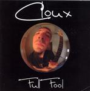

Home Artist links

Cloux - Full Fool
| Artist: | Cloux |
| Title: | Full Fool |
| Label: | self produced |
| Length(s): | 21 minutes |
| Year(s) of release: | 2004 |
| Month of review: | [07/2005] |
Line up
Cloux - guitar, drum programming bass on 4
Kengo - bass on 1,3 and 6
Xavier Zolli - bass on 2 and 5
Simon Fleurry - voices on 1 and 3
Tracks
| 1) | Human Being | 3.17
|
| 2) | Full Fool | 3.49
|
| 3) | Burp | 3.50
|
| 4) | Memento | 3.51
|
| 5) | Treacle | 3.19
|
| 6) | Lead On | 3.01
|
Summary
A mini album by a future guitar hero.
The music
Human Being opens with complex guitar music. The screamy vocals
I could do without. Plenty of stop-and-start on the title track
which packs a load of variation. The gurgly guitar sound is really
quite nice, but of course the limitations of guitar music
are felt nonetheless. There is even quite a lot of melody, if you care
to look for it, but to me it lacks a bit in flow.
Burp does in fact contain a lot of burping. This is the only
vocal track, which is about that people should not be afraid
to belge. Okay, I see the point, but I would not put something
like this on record. I guess it is meant to be funny, but
it does not make me rock with laughter.
Although certainly not original, Memento has its share
of melodicism, while Treacle brings us closer to prog
with its approach to King Crimson. Overall the tune can
be termed jazzrock, in the vein of the average Tone Center
release. Lead On is a rather tiring piece with the stop-and-start
idea full throttle.
Conclusion
Cloux can play well enough and I certainly, compositionally,
would not rank him below average. Still, it is so difficult to
come up with something in the guitar hero genre that I would
gladly play again, that it is no surprise that also Cloux does
not succeed. As part of a band to which he can lend his
eccentricity on the guitar, I can imagine him coming to
much better results.
© Jurriaan Hage